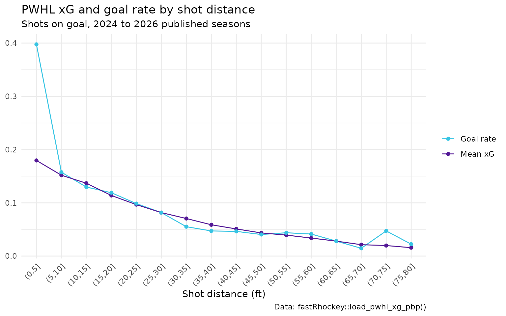
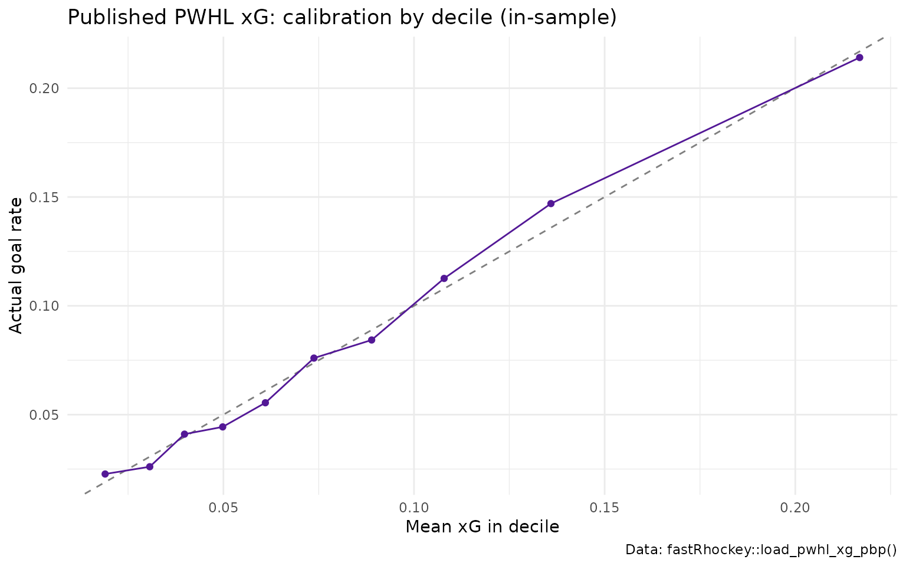

PWHL Expected Goals (xG): How the Coordinate Model Works
Saiem Gilani, Ben Howell
Source:vignettes/articles/pwhl-expected-goals-xg-model.Rmd
pwhl-expected-goals-xg-model.RmdPWHL expected goals (xG) is the probability that a shot on goal becomes a goal, estimated from the shot’s location, type and the play just before it. The Professional Women’s Hockey League began in 2024, and its HockeyTech feed records a location for effectively every shot. That makes a coordinate xG model possible even with only a few seasons of data.
This article explains the model behind the xg column of
load_pwhl_xg_pbp(): what it predicts, its features, how it
is fit and evaluated, and its open issues. Numbers in code blocks are
computed when the page is built. Numbers from model development are
quoted from the official
model card and labelled that way.
The NHL model is a different, gradient-boosted model. See the NHL expected goals article.
Which model are you running?
| PWHL xG | NHL xG | |
|---|---|---|
| Where you get it |
load_pwhl_xg_pbp() only |
load_nhl_pbp(), or computed locally by
nhl_game_pbp() /
helper_nhl_calculate_xg()
|
| Model type | Logistic regression, with a per-strength (EV/PP/SH) Platt recalibration | XGBoost, separate 5v5 and special-teams models |
| Shots scored | Shots on goal (saved shots and goals) | Unblocked attempts (shots on goal, misses and goals) |
| Fit by | The sportsdataverse-py Python package, at publish time | Committed model files, cached by fastRhockey
|
| Computed locally by fastRhockey? | No. fastRhockey loads the published values. |
Yes |
shot_quality is not xG. The PWHL
play-by-play from pwhl_pbp() and
load_pwhl_pbp() has a shot_quality column.
That is HockeyTech’s own shot label, not this model. The card also
describes a “shot-quality tier” proxy kept in sportsdataverse-py for API
stability. It is not the production model, and two of its tiers encode
whether the shot was a goal, so do not use it as a predictor.
What does the model predict?
One number per shot on goal: the probability it is a goal. The
published file has one row per shot, with the game, shooter, goalie,
clock, x_coord / y_coord,
shot_distance, shot_angle, shot type,
power-play / shorthanded / empty-net / penalty-shot flags, the outcome
(goal) and xg.
library(fastRhockey)
library(dplyr)
library(ggplot2)
seasons <- 2024:2026
pwhl_xg <- lapply(seasons, function(s) {
load_pwhl_xg_pbp(seasons = s) %>% mutate(season = s)
}) %>%
bind_rows()
glimpse(pwhl_xg)
#> Rows: 18,031
#> Columns: 22
#> $ game_id <int> 2, 2, 2, 2, 2, 2, 2, 2, 2, 2, 2, 2, 2, 2, 2, 2, 2, 2, 2…
#> $ game_season <int> 2024, 2024, 2024, 2024, 2024, 2024, 2024, 2024, 2024, 2…
#> $ game_date <chr> "2024-01-01", "2024-01-01", "2024-01-01", "2024-01-01",…
#> $ team_id <int> 4, 4, 4, 4, 4, 6, 6, 6, 6, 4, 4, 4, 4, 4, 4, 6, 6, 6, 6…
#> $ player_id <int> 44, 36, 46, 86, 38, 128, 126, 101, 100, 34, 44, 147, 36…
#> $ goalie_id <int> 64, 64, 64, 64, 64, 155, 155, 155, 155, 64, 64, 64, 64,…
#> $ period_of_game <chr> "1", "1", "1", "1", "1", "1", "1", "1", "1", "1", "1", …
#> $ sec_from_start <int> 89, 210, 216, 297, 402, 425, 552, 562, 628, 641, 643, 7…
#> $ clock <chr> "18:31", "16:30", "16:24", "15:03", "13:18", "12:55", "…
#> $ x_coord <dbl> 49.3333, 83.0000, 29.0000, 80.3333, 58.0000, -79.0000, …
#> $ y_coord <dbl> 24.6500, -9.0667, -21.2500, 4.5333, 12.7500, -7.6500, -…
#> $ shot_distance <dbl> 46.7019, 10.8722, 63.6519, 9.7807, 33.5196, 12.5906, 24…
#> $ shot_angle <dbl> 31.8580, 56.5048, 19.5024, 27.6130, 22.3569, 37.4160, 2…
#> $ event_type <chr> "Default", "Default", "Default", "Default", "Default", …
#> $ shot_quality <chr> "Non quality on net", "Non quality on net", "Non qualit…
#> $ power_play <int> NA, NA, NA, NA, NA, NA, NA, NA, NA, NA, NA, NA, NA, 1, …
#> $ short_handed <chr> NA, NA, NA, NA, NA, NA, NA, NA, NA, NA, NA, NA, NA, "0"…
#> $ empty_net <chr> NA, NA, NA, NA, NA, NA, NA, NA, NA, NA, NA, NA, NA, NA,…
#> $ penalty_shot <chr> NA, NA, NA, NA, NA, NA, NA, NA, NA, NA, NA, NA, NA, NA,…
#> $ goal <lgl> FALSE, FALSE, FALSE, FALSE, FALSE, FALSE, FALSE, FALSE,…
#> $ xg <dbl> 0.04577047, 0.11360723, 0.03451331, 0.16666314, 0.08464…
#> $ season <int> 2024, 2024, 2024, 2024, 2024, 2024, 2024, 2024, 2024, 2…Which features does it use?
As listed in the model card, the logistic regression uses:
| Group | Features |
|---|---|
| Shot geometry |
shot_distance, shot_angle, derived from
the HockeyTech rink coordinates |
| Shot type | wrist, snap, slap, backhand and tip indicators |
| Rebound | whether the shot followed a previous shot closely |
| Previous event | indicators for a previous shot, faceoff, hit, blocked shot or penalty |
| Pre-shot movement |
time_since_last, distance_from_last,
last_x, last_y
|
| Game state | empty net, home team, power play (is_pp), shorthanded
(is_sh) |
As reported in the model card’s full-corpus fit, the largest standardised effects are distance (coefficient -0.0360 per foot), angle (-0.0124 per degree) and rebound (+1.0138 on the log-odds scale, so a rebound roughly multiplies the odds of a goal by 2.7 against a non-rebound shot from the same spot).
Because the model is a deterministic re-fit on the data it is given, there is no model file to download. Each published season is scored by a fit on the full corpus available at publish time.
You can see the geometry effect directly in the published values:
pwhl_xg %>%
filter(shot_distance <= 80) %>%
mutate(distance_bin = cut(shot_distance, breaks = seq(0, 80, 5))) %>%
group_by(distance_bin) %>%
summarise(`Mean xG` = mean(xg), `Goal rate` = mean(goal), shots = n(), .groups = "drop") %>%
tidyr::pivot_longer(c(`Mean xG`, `Goal rate`)) %>%
ggplot(aes(x = distance_bin, y = value, colour = name, group = name)) +
geom_line() +
geom_point() +
scale_colour_manual(values = c("Mean xG" = "#531896", "Goal rate" = "#37C4E3")) +
labs(
title = "PWHL xG and goal rate by shot distance",
subtitle = "Shots on goal, 2024 to 2026 published seasons",
x = "Shot distance (ft)", y = NULL, colour = NULL,
caption = "Data: fastRhockey::load_pwhl_xg_pbp()"
) +
theme_minimal() +
theme(axis.text.x = element_text(angle = 45, hjust = 1))
How well does it do?
The honest test: a season holdout
As reported in the model card, the model fit on the 2024 and 2025 seasons and scored on the 7,438 shots of 2026 has a log-loss of 0.2627 against 0.2808 for a constant-rate baseline, and a rank AUC of 0.7033. Scored leave-one-season-out (each season by a model fit on the others), the card reports goals divided by xG of 0.897 for 2024, 1.097 for 2025 and 0.844 for 2026, with binomial calibration z-scores of -2.28, 2.20 and -4.47. A calibrated season has |z| of about 2 or less, so a model fit on 2024 and 2025 over-predicts 2026 goals: the earlier seasons price 2026’s shots too high. Season-to-season level shifts are real in a young league.
The published values, scored in-sample
The published xg values were fit on the same seasons
they score, so this is an in-sample check. It tells you how the column
behaves, not how the model generalises.
rank_auc <- function(y, p) {
r <- rank(p)
n1 <- sum(y == 1)
n0 <- sum(y == 0)
(sum(r[y == 1]) - n1 * (n1 + 1) / 2) / (n1 * n0)
}
log_loss <- function(y, p) {
p <- pmin(pmax(p, 1e-15), 1 - 1e-15)
-mean(y * log(p) + (1 - y) * log(1 - p))
}
pub_eval <- pwhl_xg %>%
mutate(goal = as.integer(goal)) %>%
group_by(season) %>%
summarise(
shots = n(),
goals = sum(goal),
sum_xg = round(sum(xg), 1),
goals_per_xg = round(goals / sum(xg), 3),
log_loss = round(log_loss(goal, xg), 4),
rank_auc = round(rank_auc(goal, xg), 4),
.groups = "drop"
)
pub_eval
#> # A tibble: 3 × 7
#> season shots goals sum_xg goals_per_xg log_loss rank_auc
#> <int> <int> <int> <dbl> <dbl> <dbl> <dbl>
#> 1 2024 4922 385 406. 0.949 0.258 0.686
#> 2 2025 5671 499 465. 1.07 0.278 0.699
#> 3 2026 7438 601 615. 0.978 0.257 0.724Across all 18,031 published shots the in-sample rank AUC is 0.7058.
pwhl_xg %>%
group_by(decile = ntile(xg, 10)) %>%
summarise(mean_xg = mean(xg), goal_rate = mean(goal), .groups = "drop") %>%
ggplot(aes(x = mean_xg, y = goal_rate)) +
geom_abline(slope = 1, intercept = 0, linetype = "dashed", colour = "grey50") +
geom_line(colour = "#531896") +
geom_point(colour = "#531896") +
labs(
title = "Published PWHL xG: calibration by decile (in-sample)",
x = "Mean xG in decile", y = "Actual goal rate",
caption = "Data: fastRhockey::load_pwhl_xg_pbp()"
) +
theme_minimal()
What are the known issues?
Pooled-fit geometry (reported in the model card).
Only the 2025-26 feed carries shot_distance /
shot_angle from the source. When the publisher fits one
model on all seasons pooled together, the model card reports that 10,593
of 18,031 pooled shots (58%) from earlier seasons entered the fit with a
missing distance filled as 0 ft. The card says the published
pwhl_xg_pbp files are affected until the Python fitter
recomputes missing geometry from the coordinates. The geometry columns
in the published file itself are populated; the issue is in what the
model was fit on.
PWHL coordinates (republish pending).
fastRhockey 1.1.0 corrected how the derived PWHL coordinate
columns (x_coord_fixed, x_coord_right,
x_coord_vertical and their y partners) are
built from the feed. A republish of the PWHL release files with the
corrected x_coord columns is pending, so files you load
today may predate the fix. The raw x_coord,
y_coord, shot_distance and
shot_angle columns were not changed by that fix.
Other limits, as described in the card:
- Strength coverage. The 2024 and 2025 play-by-play files carry no skater or strength columns; 2026 is about 99% covered. The power-play and shorthanded features, and the per-strength recalibration, are effectively active only for 2026 shots.
- Small samples. Three seasons and about 18,000 shots. Player goals-above-expected is a descriptive ledger here, not a talent estimate.
- No pre-shot passing data. One-timers and cross-ice passes are under-rated by construction.
- Shots on goal only. Missed and blocked attempts get no xG, so PWHL xG totals are not comparable to NHL xG totals, which include missed shots.
Which players beat their expected goals?
A descriptive table for the latest season: goals, xG and goals above expected (GAX) by shooter.
pwhl_xg %>%
filter(season == max(seasons)) %>%
group_by(player_id) %>%
summarise(shots = n(), goals = sum(goal), xg = round(sum(xg), 2), .groups = "drop") %>%
mutate(gax = round(goals - xg, 2)) %>%
arrange(desc(xg)) %>%
head(10)
#> # A tibble: 10 × 5
#> player_id shots goals xg gax
#> <int> <int> <int> <dbl> <dbl>
#> 1 72 120 18 11.8 6.19
#> 2 32 141 10 11.2 -1.24
#> 3 25 99 14 10.3 3.67
#> 4 20 84 13 9.38 3.62
#> 5 15 84 5 9.13 -4.13
#> 6 36 95 14 9.08 4.92
#> 7 53 94 3 9.04 -6.04
#> 8 205 104 9 8.94 0.06
#> 9 34 89 11 8.51 2.49
#> 10 61 80 10 8.36 1.64Join player_id to load_pwhl_rosters() or
load_pwhl_skater_box() for names.
How do I reproduce this?
library(fastRhockey)
# published xG, one row per shot on goal
pwhl_xg <- load_pwhl_xg_pbp(seasons = 2024:2026)
# full event-level play-by-play, without xG
pwhl_pbp <- load_pwhl_pbp(seasons = 2026)The model is fit in sportsdataverse-py and published from fastRhockey-pwhl-data, whose model card is docs/models/pwhl_xg.md.
Where to go next
- NHL expected goals (xG) model: the XGBoost model behind NHL xG.
- PWHL and college hockey: every PWHL loader and live function.
- Rink plots and shot maps: draw PWHL xG shot maps.
- Getting started with fastRhockey, and the PWHL Data Loaders section of the reference.
Citation
@misc{howell_gilani_fastRhockey,
author = {Ben Howell and Saiem Gilani},
title = {fastRhockey: Functions to Access Professional Women's Hockey League and National Hockey League Play by Play Data.},
url = {https://fastRhockey.sportsdataverse.org/},
doi = {10.32614/CRAN.package.fastRhockey},
year = {2026}
}